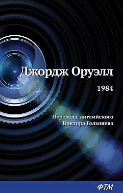

Мастер и Маргарита
Маленький принц
1984
Бойцовский клуб
Преступление и наказание
- Мастер и Маргарита
- Маленький принц
- 1984  Джордж Оруэлл
- Бойцовский клуб
- Преступление и наказание
Книги-неотъемлемая часть жизни. Каждый день создаются новые произведения, и они нравятся людям. Есть классика, которая не исчерпывает свое значение уже многие годы и столетия. Но не все они достойны пристального внимания. Тем не менее есть книги, мимо которых невозможно пройти. Я собрала список выдающихся произведений которые не подвластны времени, признаны и любимы не одним поколением экспертов и читателей, поднимают жизненно важные вопросы, которые формируют личность и повышают духовный уровень человека. Думается, это именно те книги, которые должен прочитать каждый. Многие из этих книг вы наверняка уже читали, и какие-то из них вам наверняка захочется прочесть еще раз. Как известно, гениальные произведения таят в себе невероятное количество подтекстов. Уловить и понять их дано не каждому и то только после того, как мы приобретем необходимый жизненный опыт. Попробуйте прочесть знакомую классику вновь – и вы удивитесь новым открытиям.

 Михаил Афанасьевич Булгаков
Михаил Афанасьевич Булгаков
«Мастер и Маргарита» — это роман, который стоит особняком от остальных книг, изданных в советский период. Параллельно в книге развиваются несколько сюжетных линий, а реальное смешивается с фантастическим и мистическим. Книга предлагает нам исследовать разные временные периоды, а также забраться в...Читать больше...
 Антуан де Сент-Экзюпери
Антуан де Сент-Экзюпери
В одном из писем к матери Сент-Экзюпери признался: «Мне ненавистны люди, пишущие ради забавы, ищущие эффектов. Надо иметь что сказать». Ему, романтику неба, не чуравшемуся земных радостей, любившему, по свидетельству друзей, «писать, говорить, петь, играть, докапываться до сути вещей, есть, обращать на себя внимание, ухаживать за женщинами», человеку проницательного ума...Читать больше...
Фантастическая антиутопия Оруэлла – это мир тотального контроля и страха, где люди живут ради войны, ради того, чтобы скрыть правду и воспитать настоящих патриотов. В жестоком тоталитарном государстве люди лишены гражданских прав и собственного мнения. Культ Большого Брата подразумевает жесткую социальную иерархию, где...Читать больше...
«Бойцовский клуб» – роман, ставший культовым. В центре повествования – герой, страдающий от бессонницы и отвращения ко всему, что его окружает. Он винтик в огромном механизме, часть беспрестанно работающей социальной системы. Однажды он встречает Тайлера Дердена...Читать больше...
«Преступление и наказание» — классический психологический роман, написанный Достоевским с характерным для автора глубоким философским подтекстом. Книга входит в школьную программу по литературе...Читать больше...
Разумеется, здесь собраны не все произведения, которые достойны прочтения. Но на сайте eksmo.ru собрана подборка книг, которые стоит прочесть. Удачи!